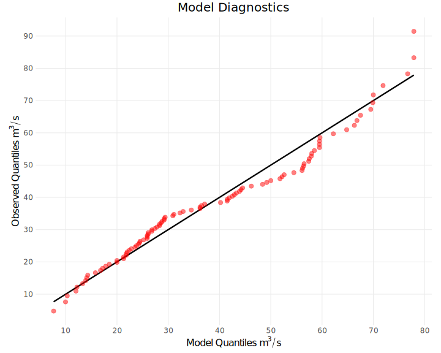

vignettes/articles/ffa-model-assessment.Rmd
ffa-model-assessment.RmdModel Assessment
Nonparametric Models
A Plotting Position is a non-parametric estimator of exceedance probabilities. By using the plotting position, we can evaluate the quality of a stationary parametric model. To compute the plotting position, arrange the sample observations in descending order of magnitude: \(x_{n:n} \geq \dots \geq x_{1:n}\). Then, the exceedance probabilities are given by the following formula:
\[ p_{i:n} = \frac{i-a}{n+1 - 2a}, \quad i \in \{1, \dots , n\} \]
The coefficient \(a\) depends on the plotting position formula:
| Formula | \(a\) | Simplified Equation |
|---|---|---|
| Weibull | \(0\) | \(p_{i:n} = \frac{i}{n +1}\) |
| Blom | \(0.375\) | \(p_{i:n} = \frac{i-0.375}{n + 0.25}\) |
| Cunnane | \(0.4\) | \(p_{i:n} = \frac{i-0.4}{n+0.2}\) |
| Gringorten | \(0.44\) | \(p_{i:n} = \frac{i-0.44}{n + 0.12}\) |
| Hazen | \(0.5\) | \(p_{i:n} = \frac{i-0.5}{n}\) |
By default, the FFA framework uses the Weibull formula, which is unbiased.
Accuracy Statistics
\(R^2\) - Coefficient of Determination
To compute the \(R^2\) statistic, we perform a linear regression of the annual maximum series data against the predictions of the parametric model at the plotting positions. The \(R^2\) statistic describes how well the parametric model captures variance in the data. Higher is better. The plot below shows the deviation of the model (red dots), from the data (black line).

Information Criterion
The Akaike Information Criterion (AIC)
and Bayesian Information Criterion (BIC)
describe the quality of a model based on the error (RMSE)
and the number of parameters (n_theta). Better models have
a lower AIC/BIC, which indicates that they
have less parameters and lower error.
The Akaike/Bayesian information criterion can also be computed using
the maximum log-likelihood from maximum likelihood
estimation. These statistics are reported as AIC_MLL
and BIC_MLL.
Uncertainty Statistics
The FFA framework uses three statistics to assess the uncertainty in flood quantile estimates:
-
AWcaptures precision (narrower confidence intervals are better). -
POCcaptures reliability (higher coverage of observations is better). -
CWIis a composite measure balancing both precision and reliability (lower is better).
We use these metrics together to evaluate the robustness of the flood frequency analysis.
AW – Average Width
AW is the average width of the interpolated confidence
intervals across return periods of interest. A smaller AW
indicates more precise quantile estimates. To compute
AW, we use log-linear interpolation to estimate the
confidence intervals of the exceedance probabilities from the confidence
intervals computed during uncertainty quantification.
POC – Percent of Coverage
POC is the percentage of data points that fall within
their corresponding confidence intervals. A higher POC
indicates greater reliability of the confidence intervals.
CWI – Confidence Width Indicator
CWI is a composite metric that penalizes wide and/or
poorly calibrated confidence intervals.
- A lower
CWIis better. - Wide intervals and low coverage increase the penalty.
- Ideal confidence intervals are both narrow and well-calibrated,
resulting in a low
CWI.
The CWI is computed using the following formula, where
alpha is the significance level.
CWI <- AW * exp((1 - alpha) - POC / 100)^2Handling Nonstationarity
When working with nonstationary models, adjustments must be made to both the empirical quantiles (derived from the plotting positions) and the theoretical quantiles. In the FFA framework, we perform nonstationary model assessment by standardizing the quantiles based on the selected distribution family.
Standardizing the theoretical quantiles:
- Get nonexceedance probabilities \(p_{(1)} \leq \dots \leq p_{(n)}\) using any plotting position formula.
- Compute the normalized theoretical quantiles \(z^{T}_{i} = \Phi^{-1}(p_{(i)})\).
Standardizing the empirical quantiles:
-
Transform each observation \(x_{i}\) into a model-based probability \(u_{i}\):
\[ u_i = F(x_i \,;\, \mu(t_i), \sigma(t_i), \kappa) \]
-
Normalize the model-based probabilities:
\[ z_{i} = \Phi^{-1}(u_{i}) \]
Sort the normalized empirical quantiles: \(z^{E}_{(1)} \leq \dots \leq z^{E}_{(n)}\).
Then, we can plot the \((z_{i}^{T}, z_{i}^{E})\) pairs in a normalized Q-Q plot. Alternatively, we can use a detrended Q-Q plot (also known as a worm plot), which plots the theoretical quantiles \(z_{i}^{T}\) against the differences \(\Delta_{i} = z_{i}^{E} - z_{i}^{T}\). If the model accurately captures the true distribution of the data, then:
\[ \text{SE}(\Delta_{i})= \frac{1}{f(z_{i}^{T})} \sqrt{\frac{p_{(i)}(1 - p_{(i)})}{n}} \]
We can use this formula to plot the 95% confidence interval at \(\pm 1.96 \cdot \text{SE}(\Delta _{i})\).